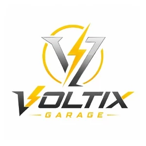
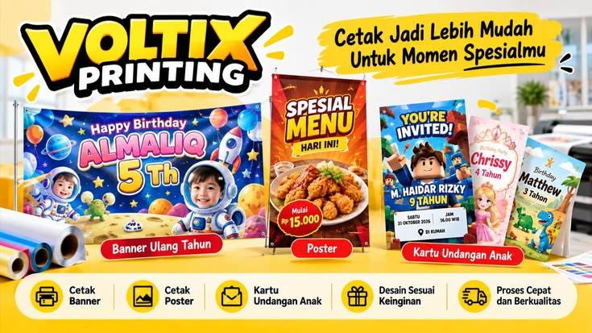
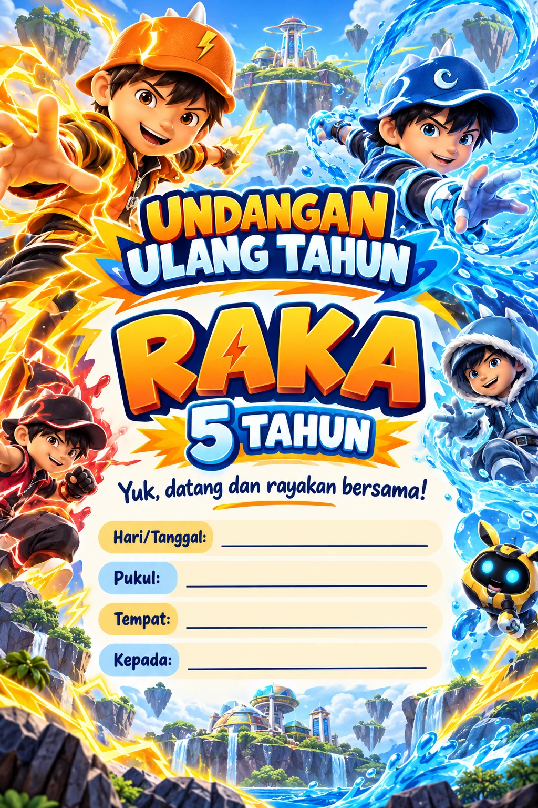
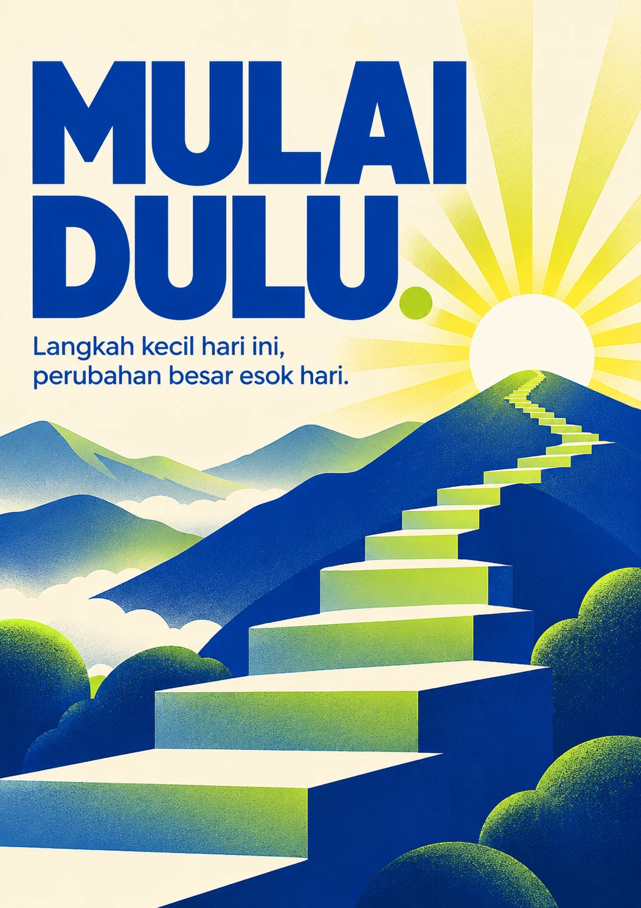
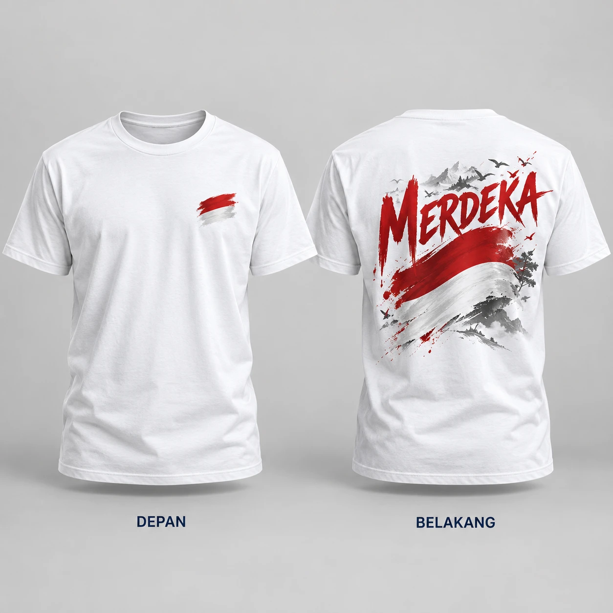
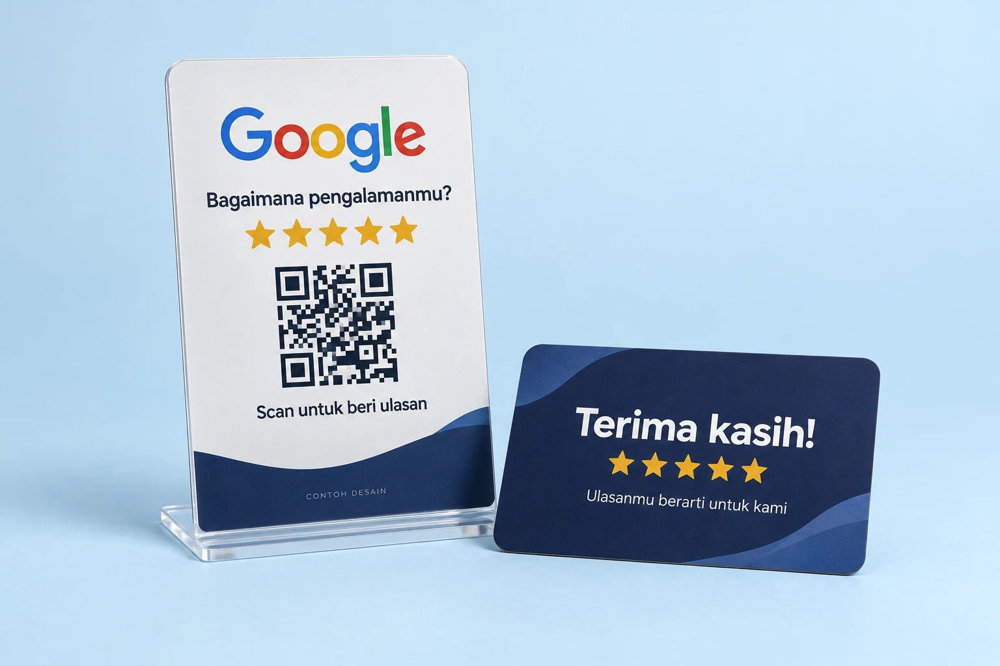

YOUR SPECIAL DAYMake a
little wish.✦BANNER ULANG TAHUN
little wish.✦BANNER ULANG TAHUN
Banner Ulang Tahun
Nama, usia, foto, dan tema favorit si kecil.

VOLTIXPRINTINGBuat pesanan ↗
Banner ulang tahun, poster usaha, dan undangan anak. Sesuaikan nama, foto, tema, serta ukuran dengan kebutuhanmu.
Ada banyak cara untuk bikin idemu terlihat.
Mulai dari produk yang paling cocok.
Nama, usia, foto, dan tema favorit si kecil.
Momen lulus jadi lebih berkesan dan personal.
Sentuhan kecil untuk brand dan souvenir kamu.
Lihat katalog stiker →
Pilih tema favorit, lalu sesuaikan nama dan detail acara si kecil.
Lihat katalog undangan anak →
Ukuran A4, A3, A2, dan A0 untuk promosi, edukasi, atau dekorasi.
Lihat katalog poster →
Desain depan dan belakang untuk acara, komunitas, atau keluarga.
Lihat katalog baju custom →
Kartu QR untuk memudahkan pelanggan memberi ulasan di Google. Desain dengan logo dan identitas usahamu.
Kirim link Google Maps / ulasan bisnis saat pesan. Ukuran, bahan, jumlah, dan harga dikonfirmasi admin.
Lihat katalog Google Review Card →Buat nama usahamu lebih mudah terlihat.
15 inspirasi untuk momen spesialmu.
Klik gambar untuk melihat desain lebih besar.
Nama, foto, teks, dan ukuran bisa disesuaikan. Pilih tema favorit untuk memasukkannya ke detail pesanan.
10 inspirasi banner untuk usaha lokal.
Klik gambar untuk melihat desain lebih besar.
Pilih desain yang cocok untuk usahamu. Nama usaha, menu, warna, kontak, dan ukuran bisa disesuaikan. Nama usaha pada gambar merupakan contoh desain.
20 pilihan desain banner wisuda.
Klik gambar untuk melihat detail.
Pilih desain favoritmu. Nama, foto, ucapan, dan ukuran dapat disesuaikan untuk momen kelulusanmu.
5 contoh tema untuk si kecil.
Klik gambar untuk memperbesar desain.
BoBoiBoy, Upin & Ipin, dinosaurus, princess, dan luar angkasa. Nama serta usia pada gambar adalah contoh. Nama anak, foto, usia, tanggal, jam, tempat, dan nama tamu bisa disesuaikan. Cantumkan detail acara serta jumlah kartu saat memesan; ukuran, bahan, harga, dan jadwal dikonfirmasi admin.
Cetak poster A4, A3, A2, dan A0.
Untuk promosi, edukasi, dan dekorasi.
Pilih ukuran atau inspirasi desain di bawah. Bisa menggunakan desain sendiri atau menyesuaikan contoh katalog. Pilihan kertas, finishing, harga, dan jadwal dikonfirmasi bersama admin.
Tersedia A4 · A3 · A2 · A0
Tersedia A4 · A3 · A2 · A0
Tersedia A4 · A3 · A2 · A0
Tersedia A4 · A3 · A2 · A0
5 contoh desain baju tema 17 Agustus.
Setiap gambar menampilkan depan dan belakang.
Pilih desain favorit untuk acara, komunitas, atau keluarga. Warna baju, teks, ukuran, dan desain depan–belakang bisa disesuaikan. Pilih cetak A2, A3, A4, logo depan kanan, atau tulisan kecil di formulir pesanan. Gambar merupakan mockup referensi; bahan, teknik cetak, harga, dan jadwal dikonfirmasi admin.
Tampilan depan & belakang
Tampilan depan & belakang
Tampilan depan & belakang
Tampilan depan & belakang
Tampilan depan & belakang
4 koleksi gantungan kunci karakter kartun.
BoBoiBoy, Upin & Ipin, Adit Sopo Jarwo, serta Nussa & Rarra.
Pilih referensi favorit dan ceritakan desain yang kamu inginkan. Gambar merupakan mockup referensi desain; pilihan bahan, bentuk, ukuran, jumlah, dan harga dikonfirmasi bersama admin.
3 koleksi referensi stiker.
Klik gambar untuk melihat pilihan lebih jelas.
Pilih koleksi favorit, lalu tuliskan desain yang diinginkan pada catatan pesanan. Ukuran, bahan, jumlah, dan harga dikonfirmasi bersama admin.
Kartu review dan display meja untuk bisnis kamu.
Klik gambar untuk melihat detail.
Contoh tampilan desain Google Review Card. Logo, warna, dan QR ulasan disesuaikan dengan bisnis kamu. Kirim link Google Maps / ulasan saat memesan; bahan, ukuran, jumlah, dan harga dikonfirmasi admin.
Tentukan kebutuhan cetak, ukuran, serta jumlah yang kamu inginkan.
Tulis tema, teks, dan detail lainnya. Siapkan foto atau referensi untuk admin.
Bahas harga, pengerjaan, dan pengiriman sebelum pesanan diproses.
Periksa preview dan sampaikan revisi. Desain dicetak setelah kamu setujui.
Masukanmu membantu pelanggan lain
memilih kebutuhan cetak dengan lebih yakin.
Contoh tampilan ulasan. Nama, avatar, bintang, dan komentar di bawah adalah ilustrasi, bukan testimoni pelanggan asli. Ulasan nyata ditampilkan setelah dikonfirmasi.
Banner ulang tahun
“Desain ulang tahunnya cerah dan nama anak terlihat jelas. Cocok untuk dekorasi acara.”
Banner UMKM
“Tampilan menu dan nama usaha mudah dibaca. Warna desainnya sesuai konsep yang saya inginkan.”
Undangan anak
“Tema undangannya lucu, detail nama dan acara tersusun rapi. Senang bisa cek desain dulu.”
Baju custom
“Pilihan cetak depan dan belakang membantu menjelaskan desain yang saya mau.”
Poster custom
“Ukuran dan teks poster bisa dikonsultasikan dulu. Desainnya terlihat rapi.”
Gantungan kunci
“Karakter kartunnya lucu untuk souvenir. Bisa diskusi tema dan jumlah pesanan lewat WhatsApp.”
Cek nama, foto, teks, dan ukuran pada preview sebelum memberikan persetujuan.
Bahas bahan, jumlah, dan total biaya bersama admin sebelum pesanan diproses.
Sampaikan kebutuhan dan jadwal acara agar tim bisa mengonfirmasi pengerjaan.
Pilih produk dan ceritakan kebutuhan cetakmu. Isi formulir, lalu lanjutkan konsultasi melalui WhatsApp.
Isi detail penerima pada formulir pesanan.
Lihat gambaran ongkir sebelum konsultasi admin.
Pilih ekspedisi sesuai kebutuhanmu. Ketersediaan layanan dan ongkir dikonfirmasi bersama admin.
Lihat simulasi berdasarkan kelompok wilayah dan berat paket. Angka memakai tabel asumsi Voltix, bukan tarif resmi JNE.
Isi alamat lengkap dan tautan Maps tujuan untuk melihat ongkir: Rp2.500/km dari rute jalan, minimum Rp20.000. Tarif dan ketersediaan aktual dikonfirmasi admin.
Setelah detail pesanan dan harga disepakati, admin akan membantu mengonfirmasi metode pembayaran melalui WhatsApp.
Konsultasikan produk, ukuran, desain, dan jadwal pengerjaan. Detail pembayaran diinformasikan langsung di chat.
Hubungi admin ↗Bisa. Tuliskan tema, warna, teks, dan konsep yang diinginkan. Siapkan foto atau referensi untuk membantu tim memahami desainmu.
Bisa mengajukan ukuran sesuai kebutuhan. Pilih “Ukuran custom” di formulir, lalu tuliskan lebar dan tinggi beserta satuannya. Tim akan mengonfirmasi pilihan bahan dan ukuran.
Harga dikonfirmasi oleh admin setelah detail produk, ukuran, bahan, dan jumlah jelas. Ringkasan dari formulir membantu mempercepat konsultasi.
Preview desain dapat diperiksa terlebih dahulu. Sampaikan koreksi nama, teks, foto, dan ukuran sebelum menyetujui desain untuk dicetak.
Jadwal bergantung pada produk, jumlah, revisi, dan antrean. Cantumkan tanggal kebutuhan agar admin dapat mengonfirmasi waktu pengerjaan serta pengiriman.